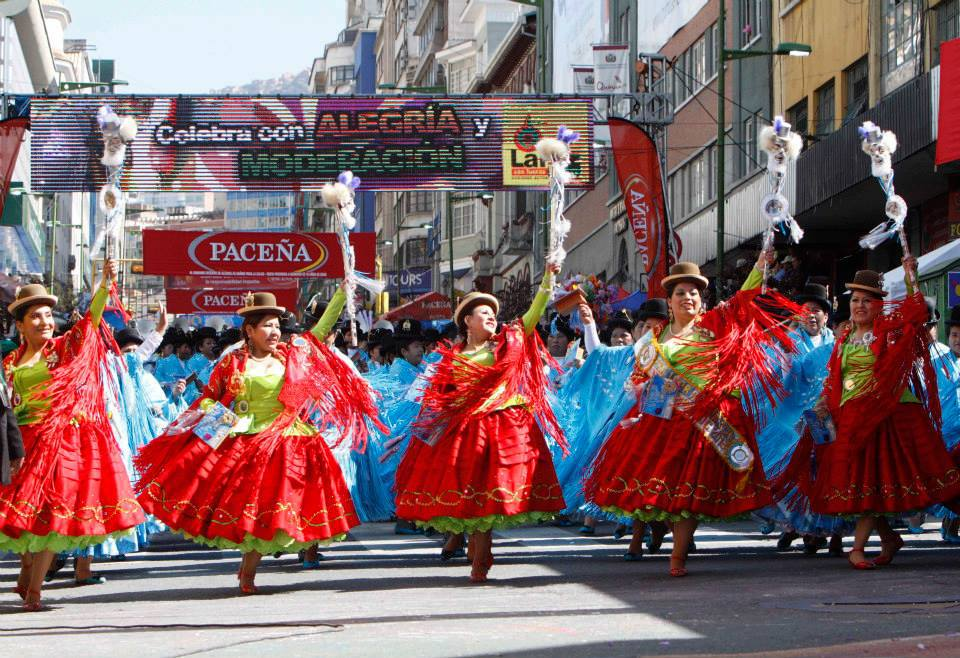
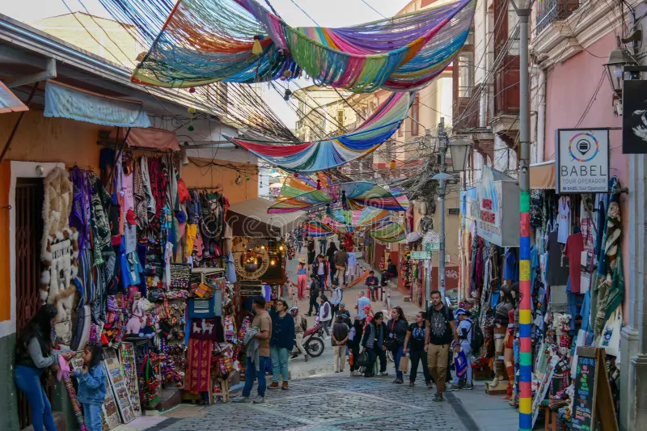

Tradiciones, Folclore y Artesanía
La Paz es un crisol de culturas, donde las tradiciones indígenas Aymara se encuentran con el legado español, creando festividades coloridas, gastronomía única y una rica expresión artística.

Fiesta del Gran Poder: Fe y Danza
La máxima expresión cultural de la ciudad. Esta festividad religiosa y folclórica es famosa por sus miles de bailarines de morenada, diablada y caporales, que llenan las calles con música, color y devoción, representando el sincretismo andino-cristiano.

Mercado de las Brujas: Tradición Aymara
Ubicado en el corazón turístico, este mercado ofrece remedios naturales, amuletos y objetos rituales utilizados por los yatiris (chamanes aymaras). Refleja la fuerte pervivencia de las creencias ancestrales y la cosmovisión andina en la vida diaria.
Lucha Libre de Cholitas: Identidad Femenina
Un espectáculo deportivo y cultural único donde mujeres de pollera (cholitas) participan en combates de lucha libre. Este evento simboliza la fuerza, la identidad y el empoderamiento de la mujer indígena en el contexto moderno de Bolivia.
Gastronomía: El Sabor Andino
La cultura paceña se degusta en platos como el **Plato Paceño** (maíz, habas, papa y queso) y las famosas **Salteñas** (empanadas jugosas). La comida es un pilar social, reflejando los productos autóctonos de la altura y la influencia colonial.